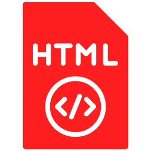
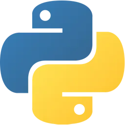
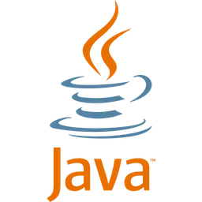

Atualmente sou estudante de Ciência da Computação na Atitus Educação. Tenho interesse na área de Backend e gosto de aprender coisas novas para desenvolver minhas habilidades. Sou uma pessoa dedicada, responsável e comprometida com tudo o que faço. Busco oportunidades para adquirir experiência, crescer profissionalmente e evoluir também como pessoa.
Tenho interesse na área de Backend, buscando desenvolver meus conhecimentos em programação, APIs, bancos de dados e desenvolvimento de sistemas. Tenho vontade de aprender cada vez mais e me aprofundar na área, contribuindo para projetos e adquirindo experiência prática.

HTML
Python
JavaMeu objetivo profissional é me tornar uma desenvolvedora backend, aprimorando meus conhecimentos em programação, banco de dados e desenvolvimento de APIs. Busco crescer continuamente na área e contribuir para a criação de soluções eficientes, seguras e escaláveis.
"A tecnologia move o mundo."
- Steve Jobs